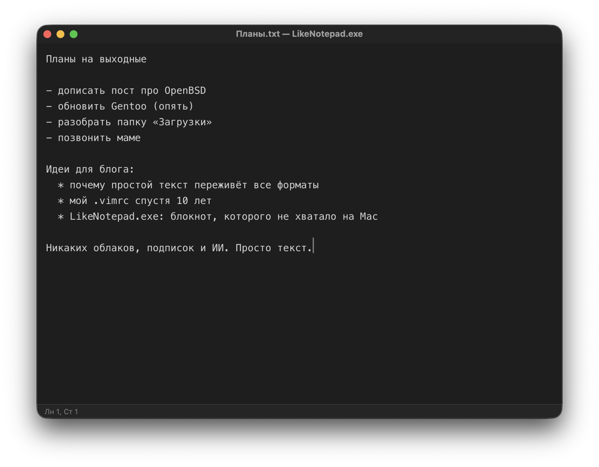

Тот самый Блокнот, но без Windows. Никаких облаков, подписок и ИИ. Просто текст.
На Windows для быстрой заметки всегда был Блокнот: открыл, написал, сохранил. На Mac есть TextEdit, но он всё норовит сделать из заметки документ с форматированием. LikeNotepad.exe — маленький редактор простого текста, который ведёт себя как старый добрый Блокнот: те же меню, те же сочетания клавиш, ничего лишнего.
.txt, .log, .md, .csv, .json, .xml, .ini, .conf, .yaml. Файл сохраняется в той же кодировке (UTF-8, UTF-16, Windows-1251) и с теми же переводами строк, с какими был открыт, — как в Блокноте..LOG.

Скачать последнюю версию LikeNotepad.exe (файл .dmg) — для Mac на Apple Silicon и Intel, macOS 10.15 и новее.
Или через Homebrew:
brew install --cask polatov/tap/likenotepadПриложение пока не подписано сертификатом Apple, поэтому при первом запуске macOS его остановит. Чтобы открыть: «Системные настройки» → «Конфиденциальность и безопасность» → внизу кнопка «Всё равно открыть». Это нужно сделать один раз.
Код открыт под лицензией MIT: github.com/polatov/likenotepad.